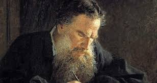

Leo Tolstoy was born on September 9, 1828, in Yasnaya Polyana, Russia, into an aristocratic family. He lost both his parents at a young age and was raised by relatives. Tolstoy attended Kazan University but did not complete his studies there. Throughout his life, he was deeply interested in social reform and philosophy, which played a significant role in shaping his worldview. His profound understanding of human nature and his passion for justice were reflected in both his literary works and personal beliefs.
Early Career
Tolstoy began his literary career in the early 1850s. His first significant work, Childhood (1852), was an autobiographical novel that detailed his early years. Following this, he wrote Boyhood (1854) and Youth (1857), both of which further explored his coming-of-age experiences. These works established him as a master storyteller and laid the groundwork for his future success. During this time, Tolstoy also explored the lives of the Russian aristocracy and the complexities of social relationships.
War and Peace
Tolstoy’s magnum opus, War and Peace (1869), is not just a historical novel but also a profound philosophical examination of humanity, society, and individual freedom. Set against the backdrop of the Napoleonic Wars, it delves into the lives of Russian aristocrats and the common people, exploring their relationships, struggles, and desires. Tolstoy’s unmatched narrative skill and psychological insight make this novel a timeless masterpiece that is still regarded as one of the greatest literary works of all time.